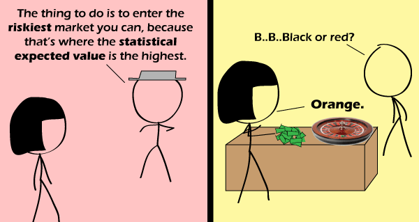

Comic JK 717
When I Feel Like It
⇤
<
?
>
⇥

⇤
<
?
>
⇥
Forum
.
RSS
.
Digg
.
Facebook
.
Reddit
.
Twitter
.
Stumbleupon
Enter your thoughts on number 717 here. Please, no spamming, trolling, or phreaking. Hi guys, Melvin here. Most of you will point out that the only thing you should look for is highest statistical expected value. I would like to add, however, that you need to weigh your options with the Kelly Criterion in order to determine how much to wager. It is possible to lose money even when the odds are in your favor! I would call that a ... pumpk-win! *Sunglasses* >YEEEEEEEEEAAAAAAAAAAAAAHHHHHHHHHHHHHHH!!!!!!!!!!!! >> WOOOOOOOOOOOOOOOO!!!! Danny Ocean and crew must have been working the casino that night. > And K..K..Ken was running the wheel. Methinks the hatted one needs some black dye. That or he just has a poor understanding of statistics. >I'm guessing the latter - White hat guy is good, Black hat guy is a dick, and Grey hat guy is just an idiot. >>I think he should have an asshat. Given the way roulette payouts are calculated, if you actually won by betting "orange", you'd have infinite winnings. </obvious> >>Not really. Since you get paid 36x for winning when the chances are 1/38 (0 and 00), and 2x when the chances are 18/38 (black or red), it logically follows that with the chance being 0/38, you'd get paid back not 38/0 but some number just a bit smaller than that. How much smaller is hard to say, but if it IS actually smaller, than it can't be infinite. >>>There are different types of infinite. So something 'smaller' could still be infinite. >>>>Smaller than 38/0. I'm guessing 36/0. And as far as levels of infinity, there are two notable infinites. There's aleph-null, and there's C. >>>>>Notable is subjective. In addition to aleph-0 and C, I would say aleph-1 is also notable. Others may say higher aleph numbers are notable too. Some people (although probably not many) may even want to talk about beth numbers. erm... why is the croupier stuttering ? surely the player is the one who is nervous ? >>>because she's betting a lot of money >>>>but, the croupier still wouldn't care: any winnings are paid by the casino, not the croupier personally... and don't most tables have betting limits anyway: bets above a certain amount require permission from a supervisor, so can be refused... unless "riskiest market" in this cartoon is a part-time casino run as a hobby by an amateur, whose only assets are the roulette wheel and the box in which it was delivered... >>>>>I especially like that he used a photo for the roulette wheel because he couldn't be bothered to draw one >>>>>>I bet if it was in two panels you would have complained it was copy-pasted.